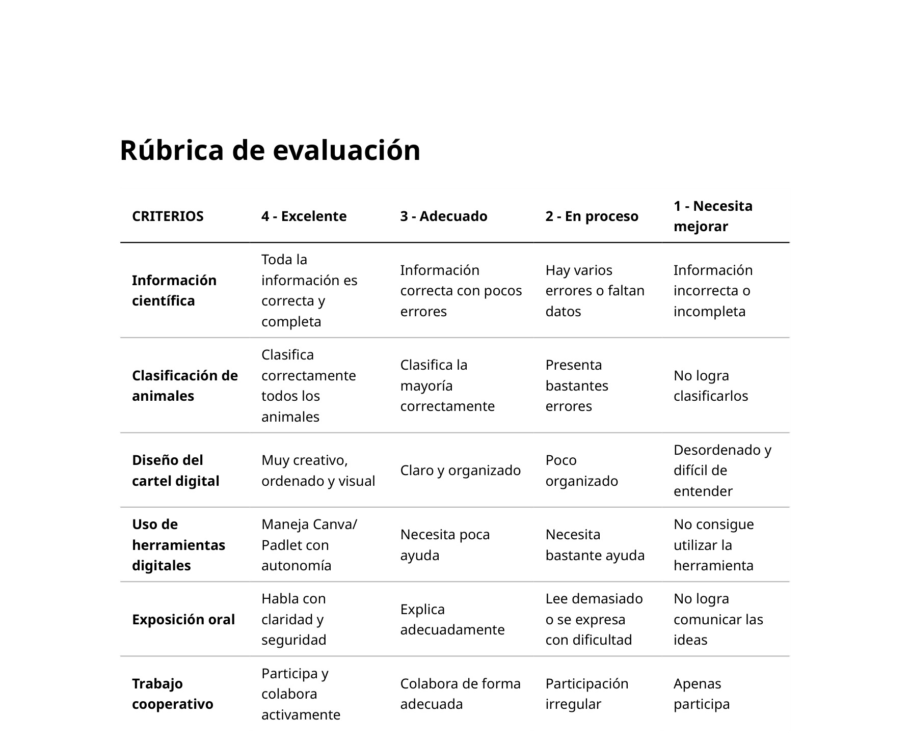

Rúbrica de evaluación
¿Cuándo se utilizará?
Esta rúbrica se aplicará principalmente en la tarea 5: Creamos nuestro cartel digital, la tarea 6: Preparamos la exposición y en la tarea 7: Presentamos nuestro trabajo.
¿Qué se evaluará?
Permitirá evaluar la calidad y organización de la información, la correcta clasificación de los animales vertebrados, el uso adecuado del vocabulario científico, la creatividad y presentación visual del cartel digital, la competencia digital en el uso de Canva o Padlet, la expresión oral y comunicación durante la exposición y la participación y cooperación dentro del grupo.
¿Cómo se obtendrán y analizarán datos?
El análisis de los datos se llevará a cabo mediante la observación del alumnado durante el desarrollo del trabajo en grupo y la exposición final. La rúbrica permitirá recopilar evidencias objetivas sobre el desempeño tanto de cada grupo como de cada alumno.
Los resultados servirán para detectar dificultades en la comprensión de los contenidos, identificar problemas en el trabajo cooperativo, comprobar el nivel de competencia digital del alumnado y valorar la capacidad comunicativa y expresiva.
Además de la calificación, estos datos ayudarán a adaptar futuras actividades, reforzar contenidos concretos y ofrecer apoyo específico al alumnado que lo necesite.

Diana de autoevaluación

¿Cuándo se utilizará?
Se aplicará al finalizar la Situación de Aprendizaje, después de la reflexión grupal.
¿Qué se evaluará?
La diana permitirá que el alumnado valore y reflexione sobre lo que ha aprendido en relación a los animales vertebrados, su participación en el grupo, su esfuerzo e implicación, el uso de herramientas digitales y su capacidad para exponer oralmente.
¿Cómo se obtendrán y analizarán datos?
La autoevaluación permitirá favorecer la reflexión sobre el propio aprendizaje, potenciar la autonomía y la autorregulación, detectar inseguridades o dificultades que no siempre aparecen en otras pruebas y mejorar futuras propuestas didácticas.
Además, permitirá comparar la percepción del alumnado con los resultados obtenidos en otros instrumentos de evaluación.